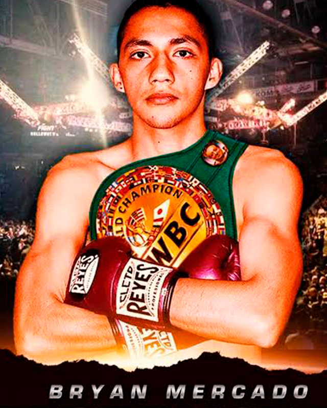

← Nuestros peleadores
Bryan Mercado · El Destructor

Álvaro Obregón, CDMX · 33-2-0, 27 KO’s
El boxeo corre por sus venas, pues su padre y su hermano mayor han sido boxeadores profesionales; aunque su mente estaba en el futbol, incluso llegando a alinear en las fuerzas básicas del Cruz Azul, la sangre llama y un buen día decidió entrenar boxeo, donde su potente pegada se convirtió en su principal arma, logrando nocauts de gran manufactura que lo convirtieron en ‘El Destructor’, siendo llamado por algunos expertos como ‘El Artista del KO’, conquistando su primer cinturón Internacional al derrotar de forma vistosa al ex campeón mundial Mzuvukile Magwaca, su racha de victorias incluye al contendiente mundialista filipino Arthur Villanueva, su buena racha fue cortada `por el japonés Ryosuke Nishida en febrero, un duelo eliminatorio muy accidentado que ganó el nipón por decisión técnica cuando un corte accidental obligó a detener el combate en el séptimo giro.